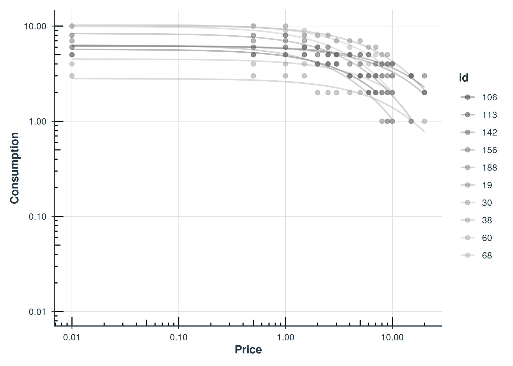
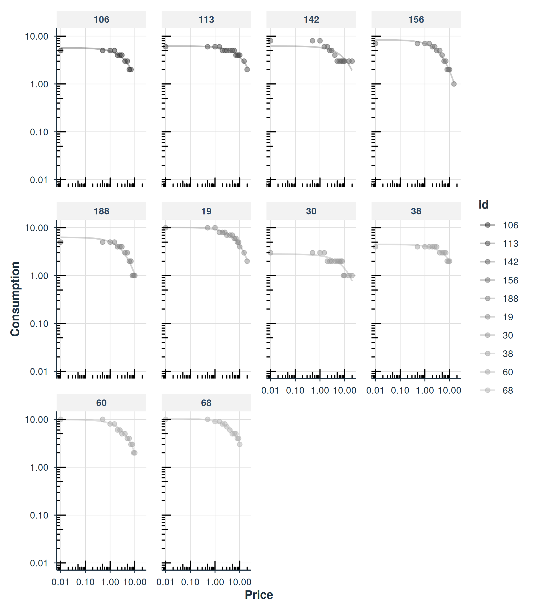
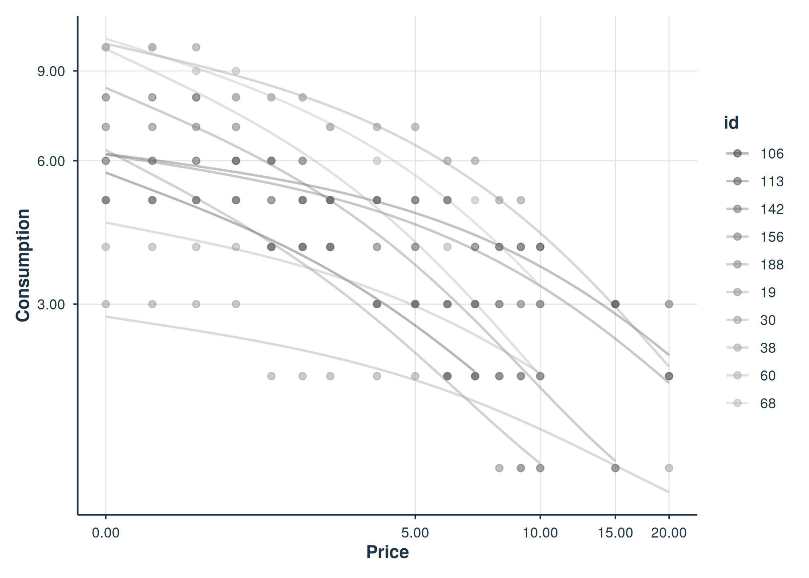
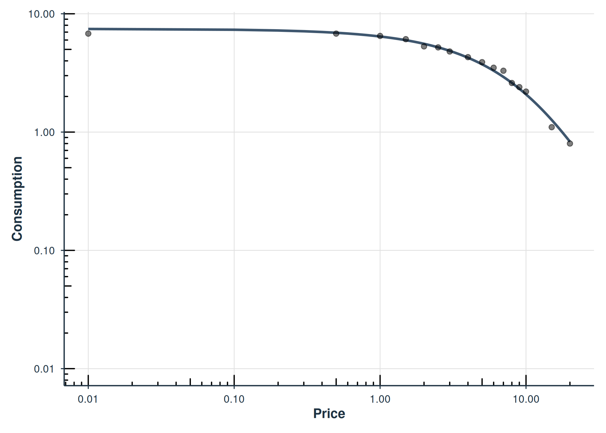
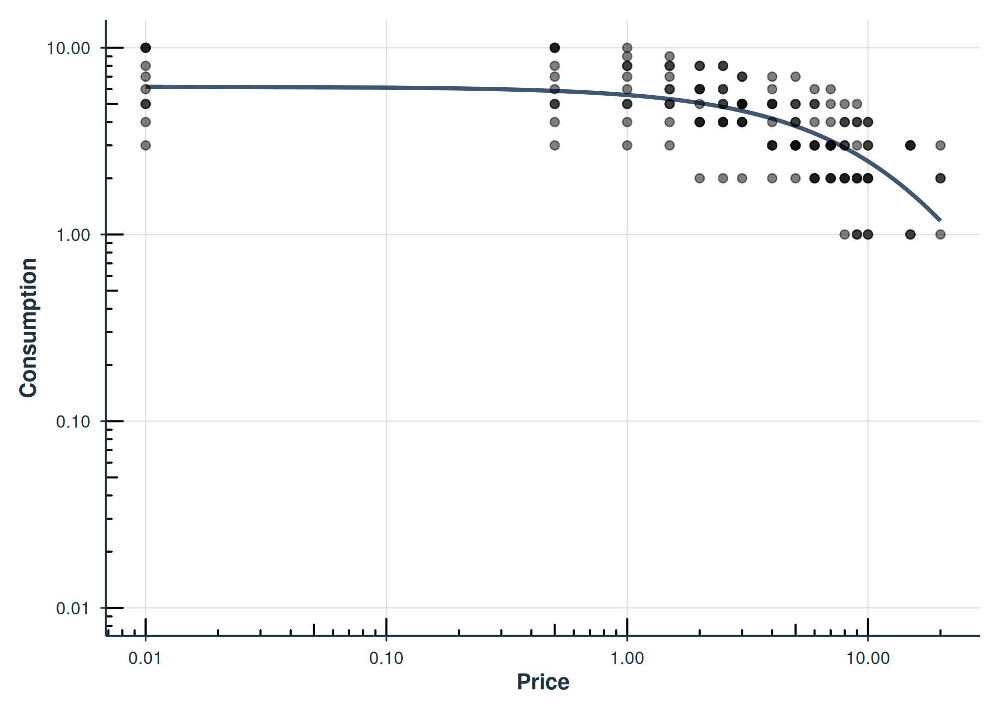

Fixed-Effect Demand Modeling with `beezdemand`
Brent Kaplan
2026-02-21
Source:vignettes/fixed-demand.Rmd
fixed-demand.RmdIntroduction
This vignette demonstrates how to fit individual (fixed-effect)
demand curves using fit_demand_fixed(). This function fits
separate nonlinear least squares (NLS) models for each subject,
producing per-subject estimates of demand parameters like Q_{0} (intensity) and \alpha (elasticity).
When to use fixed-effect models: Fixed-effect models
are appropriate when you want independent curve fits for each
participant. They make no assumptions about the distribution of
parameters across subjects and are the simplest approach to demand curve
analysis. For hierarchical models that share information across
subjects, see vignette("mixed-demand"). For guidance on
choosing between approaches, see
vignette("model-selection").
Data format: All modeling functions expect
long-format data with columns id (subject identifier),
x (price), and y (consumption). See
vignette("beezdemand") for details on data preparation and
conversion from wide format.
Fitting with Different Equations
fit_demand_fixed() supports several equation forms. We
demonstrate the three most common below using the apt
(Alcohol Purchase Task) dataset.
Hursh & Silberberg (“hs”)
The exponential model of demand (Hursh & Silberberg, 2008):
\log_{10}(Q) = \log_{10}(Q_0) + k \cdot (e^{-\alpha \cdot Q_0 \cdot x} - 1)
fit_hs <- fit_demand_fixed(apt, equation = "hs", k = 2)
fit_hs
#>
#> Fixed-Effect Demand Model
#> ==========================
#>
#> Call:
#> fit_demand_fixed(data = apt, equation = "hs", k = 2)
#>
#> Equation: hs
#> k: fixed (2)
#> Subjects: 10 ( 10 converged, 0 failed)
#>
#> Use summary() for parameter summaries, tidy() for tidy output.Koffarnus (“koff”)
The exponentiated model (Koffarnus et al., 2015):
Q = Q_0 \cdot 10^{k \cdot (e^{-\alpha \cdot Q_0 \cdot x} - 1)}
fit_koff <- fit_demand_fixed(apt, equation = "koff", k = 2)
fit_koff
#>
#> Fixed-Effect Demand Model
#> ==========================
#>
#> Call:
#> fit_demand_fixed(data = apt, equation = "koff", k = 2)
#>
#> Equation: koff
#> k: fixed (2)
#> Subjects: 10 ( 10 converged, 0 failed)
#>
#> Use summary() for parameter summaries, tidy() for tidy output.Simplified (“simplified”)
The simplified exponential model (Rzeszutek et al., 2025) does not require a scaling constant k:
Q = Q_0 \cdot e^{-\alpha \cdot Q_0 \cdot x}
fit_simplified <- fit_demand_fixed(apt, equation = "simplified")
fit_simplified
#>
#> Fixed-Effect Demand Model
#> ==========================
#>
#> Call:
#> fit_demand_fixed(data = apt, equation = "simplified")
#>
#> Equation: simplified
#> k: none (simplified equation)
#> Subjects: 10 ( 10 converged, 0 failed)
#>
#> Use summary() for parameter summaries, tidy() for tidy output.The k Parameter
The scaling constant k controls the
range of the demand function. For the "hs" and
"koff" equations, k can be specified in
several ways:
k value |
Behavior |
|---|---|
Numeric (e.g., 2) |
Fixed constant for all subjects (default) |
"ind" |
Individual k per subject, computed from each subject’s data range |
"share" |
Single shared k estimated across all subjects via global regression |
"fit" |
k is a free parameter estimated jointly with Q_0 and \alpha |
## Fixed k (default)
fit_demand_fixed(apt, equation = "hs", k = 2)
## Individual k per subject
fit_demand_fixed(apt, equation = "hs", k = "ind")
## Shared k across subjects
fit_demand_fixed(apt, equation = "hs", k = "share")
## Fitted k as free parameter
fit_demand_fixed(apt, equation = "hs", k = "fit")The param_space argument controls whether optimization
is performed on the natural scale ("natural", the default)
or log10 scale ("log10"). The log10 scale can improve
convergence for some datasets:
fit_demand_fixed(apt, equation = "hs", k = 2, param_space = "log10")Inspecting Fits
All beezdemand_fixed objects support the standard
tidy(), glance(), augment(), and
confint() methods for programmatic access to results.
tidy(): Per-Subject Parameter Estimates
tidy(fit_hs)
#> # A tibble: 40 × 10
#> id term estimate std.error statistic p.value component estimate_scale
#> <chr> <chr> <dbl> <dbl> <dbl> <dbl> <chr> <chr>
#> 1 19 Q0 10.2 0.269 NA NA fixed natural
#> 2 30 Q0 2.81 0.226 NA NA fixed natural
#> 3 38 Q0 4.50 0.215 NA NA fixed natural
#> 4 60 Q0 9.92 0.459 NA NA fixed natural
#> 5 68 Q0 10.4 0.329 NA NA fixed natural
#> 6 106 Q0 5.68 0.300 NA NA fixed natural
#> 7 113 Q0 6.20 0.174 NA NA fixed natural
#> 8 142 Q0 6.17 0.641 NA NA fixed natural
#> 9 156 Q0 8.35 0.411 NA NA fixed natural
#> 10 188 Q0 6.30 0.564 NA NA fixed natural
#> # ℹ 30 more rows
#> # ℹ 2 more variables: term_display <chr>, estimate_internal <dbl>glance(): Model-Level Summary
glance(fit_hs)
#> # A tibble: 1 × 12
#> model_class backend equation k_spec nobs n_subjects n_success n_fail
#> <chr> <chr> <chr> <chr> <int> <int> <int> <int>
#> 1 beezdemand_fixed legacy hs fixed (2) 146 10 10 0
#> # ℹ 4 more variables: converged <lgl>, logLik <dbl>, AIC <dbl>, BIC <dbl>augment(): Fitted Values and Residuals
augment(fit_hs)
#> # A tibble: 146 × 6
#> id x y k .fitted .resid
#> <chr> <dbl> <dbl> <dbl> <dbl> <dbl>
#> 1 19 0 10 2 10.2 -0.159
#> 2 19 0.5 10 2 9.69 0.314
#> 3 19 1 10 2 9.24 0.760
#> 4 19 1.5 8 2 8.82 -0.819
#> 5 19 2 8 2 8.42 -0.421
#> 6 19 2.5 8 2 8.04 -0.0444
#> 7 19 3 7 2 7.69 -0.689
#> 8 19 4 7 2 7.03 -0.0334
#> 9 19 5 7 2 6.45 0.554
#> 10 19 6 6 2 5.92 0.0820
#> # ℹ 136 more rowsconfint(): Confidence Intervals
confint(fit_hs)
#> # A tibble: 40 × 6
#> id term estimate conf.low conf.high level
#> <chr> <chr> <dbl> <dbl> <dbl> <dbl>
#> 1 19 Q0 10.2 9.63 10.7 0.95
#> 2 30 Q0 2.81 2.36 3.25 0.95
#> 3 38 Q0 4.50 4.08 4.92 0.95
#> 4 60 Q0 9.92 9.02 10.8 0.95
#> 5 68 Q0 10.4 9.75 11.0 0.95
#> 6 106 Q0 5.68 5.10 6.27 0.95
#> 7 113 Q0 6.20 5.85 6.54 0.95
#> 8 142 Q0 6.17 4.92 7.43 0.95
#> 9 156 Q0 8.35 7.54 9.15 0.95
#> 10 188 Q0 6.30 5.20 7.41 0.95
#> # ℹ 30 more rowssummary(): Formatted Summary
The summary() method provides a formatted overview
including parameter distributions across subjects:
summary(fit_hs)
#>
#> Fixed-Effect Demand Model Summary
#> ==================================================
#>
#> Equation: hs
#> k: fixed (2)
#>
#> Fit Summary:
#> Total subjects: 10
#> Converged: 10
#> Failed: 0
#> Total observations: 146
#>
#> Parameter Summary (across subjects):
#> Q0:
#> Median: 6.2498
#> Range: [ 2.8074 , 10.3904 ]
#> alpha:
#> Median: 0.004251
#> Range: [ 0.001987 , 0.00785 ]
#>
#> Per-subject coefficients:
#> -------------------------
#> # A tibble: 40 × 10
#> id term estimate std.error statistic p.value component estimate_scale
#> <chr> <chr> <dbl> <dbl> <dbl> <dbl> <chr> <chr>
#> 1 106 Q0 5.68 0.300 NA NA fixed natural
#> 2 106 alpha 0.00628 0.000432 NA NA fixed natural
#> 3 106 alpha_st… 0.0257 0.00176 NA NA fixed natural
#> 4 106 k 2 NA NA NA fixed natural
#> 5 113 Q0 6.20 0.174 NA NA fixed natural
#> 6 113 alpha 0.00199 0.000109 NA NA fixed natural
#> 7 113 alpha_st… 0.00812 0.000447 NA NA fixed natural
#> 8 113 k 2 NA NA NA fixed natural
#> 9 142 Q0 6.17 0.641 NA NA fixed natural
#> 10 142 alpha 0.00237 0.000400 NA NA fixed natural
#> # ℹ 30 more rows
#> # ℹ 2 more variables: term_display <chr>, estimate_internal <dbl>Normalized Alpha (\alpha^*)
When k varies across participants or
studies (e.g., k = "ind" or k = "fit"), raw
\alpha values are not directly
comparable. The alpha_star column in tidy()
output provides a normalized version (Strategy B; Rzeszutek et al.,
2025) that adjusts for the scaling constant:
\alpha^* = \frac{-\alpha}{\ln\!\left(1 - \frac{1}{k \cdot \ln(b)}\right)}
where b is the logarithmic base (10
for HS/Koff equations). Standard errors are computed via the delta
method. alpha_star requires k
\cdot \ln(b) > 1; otherwise NA is returned.
tidy(fit_hs) |>
filter(term == "alpha_star") |>
select(id, term, estimate, std.error)
#> # A tibble: 10 × 4
#> id term estimate std.error
#> <chr> <chr> <dbl> <dbl>
#> 1 19 alpha_star 0.00836 0.000249
#> 2 30 alpha_star 0.0240 0.00276
#> 3 38 alpha_star 0.0172 0.00146
#> 4 60 alpha_star 0.0176 0.000592
#> 5 68 alpha_star 0.0113 0.000394
#> 6 106 alpha_star 0.0257 0.00176
#> 7 113 alpha_star 0.00812 0.000447
#> 8 142 alpha_star 0.00969 0.00163
#> 9 156 alpha_star 0.0193 0.000668
#> 10 188 alpha_star 0.0321 0.00184Plotting
Basic Demand Curves
The plot() method displays fitted demand curves with
observed data points. The x-axis defaults to a log10 scale:
plot(fit_hs)
Faceted by Subject
Use facet = TRUE to show each subject in a separate
panel:
plot(fit_hs, facet = TRUE)
Axis Transformations
Control the x- and y-axis transformations with x_trans
and y_trans:
plot(fit_hs, x_trans = "pseudo_log", y_trans = "pseudo_log")
Diagnostics
Model Checks
check_demand_model() summarizes convergence, residual
properties, and potential issues:
check_demand_model(fit_hs)
#>
#> Model Diagnostics
#> ==================================================
#> Model class: beezdemand_fixed
#>
#> Convergence:
#> Status: Converged
#>
#> Residuals:
#> Mean: 0.0284
#> SD: 0.5306
#> Range: [-1.458, 2.228]
#> Outliers: 3 observations
#>
#> --------------------------------------------------
#> Issues Detected (1):
#> 1. Detected 3 potential outliers across subjectsResidual Plots
plot_residuals() produces diagnostic plots. Use
$fitted for a residuals-vs-fitted plot:
plot_residuals(fit_hs)$fitted
Predictions
Default Predictions
predict() with no arguments returns fitted values at the
observed prices:
predict(fit_hs)
#> # A tibble: 160 × 3
#> x id .fitted
#> <dbl> <chr> <dbl>
#> 1 0 19 10.2
#> 2 0 30 2.81
#> 3 0 38 4.50
#> 4 0 60 9.92
#> 5 0 68 10.4
#> 6 0 106 5.68
#> 7 0 113 6.20
#> 8 0 142 6.17
#> 9 0 156 8.35
#> 10 0 188 6.30
#> # ℹ 150 more rowsCustom Price Grid
Supply newdata to predict at specific prices:
new_prices <- data.frame(x = c(0, 0.5, 1, 2, 5, 10, 20))
predict(fit_hs, newdata = new_prices)
#> # A tibble: 70 × 3
#> x id .fitted
#> <dbl> <chr> <dbl>
#> 1 0 19 10.2
#> 2 0 30 2.81
#> 3 0 38 4.50
#> 4 0 60 9.92
#> 5 0 68 10.4
#> 6 0 106 5.68
#> 7 0 113 6.20
#> 8 0 142 6.17
#> 9 0 156 8.35
#> 10 0 188 6.30
#> # ℹ 60 more rowsAggregated Models
Instead of fitting each subject individually, you can fit a single curve to aggregated data.
Mean Aggregation
agg = "Mean" computes the mean consumption at each price
across subjects, then fits a single curve to those means:
fit_mean <- fit_demand_fixed(apt, equation = "hs", k = 2, agg = "Mean")
fit_mean
#>
#> Fixed-Effect Demand Model
#> ==========================
#>
#> Call:
#> fit_demand_fixed(data = apt, equation = "hs", k = 2, agg = "Mean")
#>
#> Equation: hs
#> k: fixed (2)
#> Aggregation: Mean
#> Subjects: 1 ( 1 converged, 0 failed)
#>
#> Use summary() for parameter summaries, tidy() for tidy output.
plot(fit_mean)
Pooled Aggregation
agg = "Pooled" fits a single curve to all data points
pooled together, retaining error around each observation but ignoring
within-subject clustering:
fit_pooled <- fit_demand_fixed(apt, equation = "hs", k = 2, agg = "Pooled")
fit_pooled
#>
#> Fixed-Effect Demand Model
#> ==========================
#>
#> Call:
#> fit_demand_fixed(data = apt, equation = "hs", k = 2, agg = "Pooled")
#>
#> Equation: hs
#> k: fixed (2)
#> Aggregation: Pooled
#> Subjects: 1 ( 1 converged, 0 failed)
#>
#> Use summary() for parameter summaries, tidy() for tidy output.
plot(fit_pooled)
Conclusion
The fit_demand_fixed() interface provides a modern,
consistent API for individual demand curve fitting with full support for
the tidy() / glance() / augment()
workflow. For datasets where borrowing strength across subjects is
desirable, consider the mixed-effects or hurdle model approaches.
See Also
-
vignette("beezdemand")– Getting started with beezdemand -
vignette("model-selection")– Choosing the right model class -
vignette("group-comparisons")– Extra sum-of-squares F-test for group comparisons -
vignette("mixed-demand")– Mixed-effects nonlinear demand models (NLME) -
vignette("hurdle-demand-models")– Two-part hurdle demand models via TMB -
vignette("migration-guide")– Migrating fromFitCurves()tofit_demand_fixed()